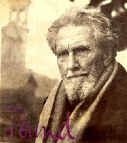
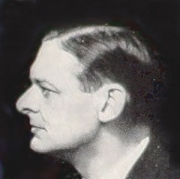
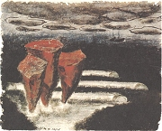
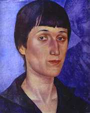
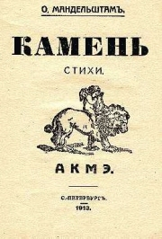
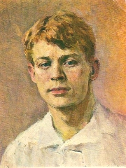
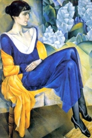

Ezra Pound (1885-1972)

Američan Pound [paund] nedokončil univerzitní studia a cestoval po Itálii, Anglii a Francii. Podporoval Mussoliniho a italské fašisty, za což byl po válce souzen pro velezradu. Trestu se vyhnul, protože byl označen za mentálně neschopného. Z psychiatrické léčebny se dostal až roku 1958. Základním dílem imagismu je jeho sbírka Cantos.
Co si myslíš o Poundově výroku „je lepší vytvořit za celý život jediný obraz, než produkovat rozsáhlá díla“?
Thomas Stearns Eliot
(1888-1965)
T.S.Eliot se narodil ve Spojených státech amerických, ale život strávil v Anglii. Zabýval se indickou mystikou a studoval řeckou filozofii. Pracoval jako ředitel nakladatelství. Ezra Pound ho získal pro imagismus. T.S.Eliot napsal básně Pustina (Pustá země) nebo Dutí lidé, divadelní hru Vražda v katedrále a na 500 esejů, např. Tradice a individuální talent. V roce 1948 obdržel Nobelovu cenu za literaturu.
Co si myslíš o Eliotově výroku „poctivá kritika a citlivé hodnocení se nezaměřuje na básníka, ale na poezii“?
|
IMAGISMUS A AKMÉISMUS
Společným rysem angloamerického imagismu i ruského imažinismu a akméismu je jistá úcta k tradici a konzervativnost, kterou v ostatních avantgardních směrech nenajdeme. Proto bývají tyto směry někdy považovány za neoklasicistní a jejich stoupenci nejsou považováni za avantgardní umělce. Imagisté jsou rovněž označováni jako modernisté, což je ovšem trochu zavádějící.
Ezra Pound: Cantos
Pound psal svou sbírku Cantos [kantos] průběžně od roku 1905 a neustále ji rozšiřoval. Jako celek vyšla až po jeho smrti, kdy čítala 117 básní. Pound hledal inspiraci v řecké mytologii (Odysseus, Teiresias...) a dějinách Evropy, Spojených států amerických i Číny. Moderní civilizaci vidí jako obdobu Pekla z Dantovy Božské komedie. Náročné básně jsou plné složitých asociací a cizojazyčných vložek (čínské písmo, klasická řečtina...).
T.S.Eliot: Pustina
Eliotova báseň Pustina (Pustá země) vyšla roku 1922. Jde o jedno z čtenářsky nejnáročnějších literárních děl. Jeho interpretaci ztěžuje značná fragmentálnost, odkazy k mytologii i historii různých národů (Indové, Řekové, Římané...), využívání motivů ze světové literatury (Shakespeare, Dante, upanišady...), prolínání minulosti se současností, složité básnické obrazy nebo cizojazyčné vložky (němčina, sanskrt...). Klíčem k výkladu Pustiny jsou vědecká pojednání o mytologii z pera Frazera a Westonové, která autor důkladně prostudoval. Zvláště ho zaujaly vegetační mýty a příběhy o hledání svatého grálu. Pustinu tvoří 5 zpěvů – Pohřbívání mrtvých, Partie šachů, Kázání ohně, Smrt utopením a Co říkal hrom. Autor ji ještě doplnil vlastními vysvětlivkami.
|
Imagismus
Zakladatelem imagismu byl Angličan Thomas Ernest Hulme (1883-1917), hlásil se k němu Ezra Pound, T.S.Eliot a další angloameričtí umělci. Pro tento směr jsou typické precizní obrazy (images), ve kterých se prolíná intelekt s imaginací a senzibilitou. Podle Pounda je obraz „vyjádřením komplexního intelektuálního a emocionálního významu v časovém okamžiku“. Imagisté originálně navazovali na evropskou literární tradici, hledali inspiraci v mytologii i orientálních motivech a propojovali minulost s přítomností. Psali volným veršem, ale nevyhýbali se ani klasickým básnickým formám. Imagistické texty postrádají ozdobnost a jsou zhuštěné až k nesrozumitelnosti. Velmi blízko k tomuto směru měl vorticismus (lat. vortex = vír).
Vysvětli význam slova imaginace.

T.S.Eliot

Šímova ilustrace k Eliotově básni
Jak se ti líbí ukázka z básně Pustina? Rozumíš jí?
|
Sergej Jesenin (1895-1925)
Ruský imažinista Jesenin se oženil s americkou tanečnicí Duncanovou a často pobýval na Západě. Je autorem básnických sbírek Slavnost za mrtvé, Mariiny klíče, Krčemná Moskva, Chuligánova zpověď, Perské motivy, Nekřičím, nepláču, nelkám... nebo Nevyřčenou svěžest, jasnou modř a něhu..., divadelní hry Země ničemů a řady poém – Rus sovětská, Anna Sněginová, Černý muž, Pugačov atd. Jesenin byl v nemilosti oficiální sovětské kritiky. Svůj život ukončil sebevraždou.
|
Jeseninova poezie
Jesenin se hlásil k imažinismu pouze v letech 1918 až 1920. Často opěvoval vesnický život a krásu přírody. Ve vrcholných básnických sbírkách Krčemná Moskva a Chuligánova zpověď ale obrátil svou pozornost k životu ve městě.
|
Imažinismus
Ruští imažinisté navazovali na tvorbu angloamerických imagistů. Imažinismus ovlivnil ruskou poezii především v letech 1919 až 1927. Původně šlo o negativní reakci na futurismus. Imažinisté se soustředili na sugestivní básnické obrazy, které kladou volně vedle sebe, nečekaná spojení a souvislosti. Imažinismus měl urbanistické a
selské křídlo. Poetika města i venkova se spojuje v básních Sergeje Jesenina.
Které Jeseninovy básnické obrazy tě zaujaly? Čím?
Jak se ti líbí jeho verše?
|
Anna Achmatovová
(1888-1966)
Ruská spisovatelka Anna Andrejevna Gorenková byla manželkou vůdce akméistů Gumiljova a proslavila se pod pseudonymem Achmatovová. Je autorkou básnických sbírek Večer, Růženec, Bílé hejno nebo Jitrocel a esejů O Puškinovi. Po popravě manžela se na dlouhou dobu odmlčela. Otřesena hrůzami 2. sv. války píše Poému bez hrdiny, Rekviem a Severní elegie. Po skončení války dosáhl propagátor socialistického realismu Ždanov zákazu publikovat její díla. Rehabilitována byla až na sklonku života.
Osip Mandelštam
(1891-1938)
Ruský akméista Mandelštam studoval na Sorbonně, v Heidelbergu a Petrohradě. Napsal básnické sbírky Kámen, Zvěřinec nebo Soumrak svobody, eseje Jitro akméismu nebo Rozprava o Dantovi. Do češtiny byly přeloženy prózy Egyptský tmář, Čtvrtá próza, Putování do Arménie nebo autobiografické črty Halas doby. Sovětská moc mu znemožnila publikovat a roku 1934 vyústily tvrdé perzekuce v jeho zatčení. Mandelštam zemřel vysílením v gulagu nedaleko Vladivostoku. Jeho knihy začaly vycházet po 2. sv. válce v USA. Svědectví o básníkových osudech podala jeho manželka Naděžda ve svých vzpomínkových knihách, které mohly vyjít až v 80. letech (do té doby kolovaly jako samizdaty).
Jaké jsou základní myšlenky Jitra akméismu?
|
Tvorba Anny Achmatovové
Achmatovová psala především milostnou lyriku a zabývala se intimními pocity. Její básně tvoří jakési minutové romány, ve kterých je na malé ploše zhuštěn celý lidský příběh.
Osip Mandelštam: Kámen
Mandelštam oceňuje výdobytky minulosti a uznává význam tradice. Hledá inspiraci v antice, ale také se zajímá o současnost. Obdivuje techniku nebo sport a v duchu akméismu zobrazuje především předmětný svět. Kámen je v jeho stejnojmenné sbírce mnohoznačným symbolem pro tradici, pevnost nebo skvostné stavby.
Osip Mandelštam: Jitro akméismu
Jitro akméismu můžeme považovat za manifest nového uměleckého směru.
|
Akméismus
Akméismus se zrodil v Rusku a zásadně ovlivnil zdejší literaturu v letech 1912 až 1922. Akméistům vadila nesrozumitelnost symbolismu a požadovali, aby se básníci zabývali především realitou a pojmenovávali věci pravými jmény, nikoliv mlhavými symboly. Původní významy řeckého slova akmé jsou vrchol a květ, neboli završení všeho. „Růže je pro nás zase růží s vůní, lístky a květem, nikoliv symbolem něčeho jiného,“ tvrdili akméisté. Umělci sdružení v kroužku Cech básníků se odmítli přihlásit k myšlenkám Velké říjnové revoluce. Vůdce hnutí Gumiljov byl dokonce roku 1921 zastřelen za účast v „protirevolučním spiknutí“.

Kuzma Petrov-Vodkin: Portrét Anny Achmatovové

Obálka sbírky Kámen
|
Internetové stránky
Pound: Cantos, recenze překladu
Pound
Pound
Pound
Rulf: Pustá země, článek
Eliot
Eliot
Petrov-Vodkin, malíř

Sergej Jesenin
|
Doporučená četba
Achmatovová, Anna: Milostný deník, Praha 1963
Achmatovová, A.: Modrý večer, přel. I.Jakubcová, Odeon, Praha 1990
Achmatovová, A.: Půlnoční zrcadla, Praha 1976
Achmatovová, A.: Vestálka paměti, přel. H.Vrbová, Lidové nakladatelství, Praha 1990
Achmatovová, A.: Vrcholení luny, Praha 1972
Eliot, T.S.: Eseje, Praha 1972
Eliot, T.S.: O básnictví a básnících, Praha 1991
Eliot, T.S.: Pustina a jiné básně, přel. J.Valja, Odeon, Praha 1967
Hilský, Martin: Modernisté, Torst, Praha 1995 (Eliot, Joyce...)
Isadora Duncanová a Sergej Jesenin, Básník a tanečnice, Praha 1998
Jesenin, Sergej: Lyrika, Československý spisovatel, Praha 1964
Jesenin, S.: Modravá Rus, Mladá fronta, Praha 1965
Jesenin, S.: Nářek harmoniky, přel. J.Zábrana, BB art, Praha 2002
Jesenin, S.: Nebudu si lhát, Praha 1995
Jesenin, S.: Ryšavý podzim, Praha 1984
Jesenin, S.: Slaměný měsíc, Lidové nakladatelství, Praha 1981
Mandelštam, Osip: Prózy, přel. Dušková, Kouba, Odeon, Praha 1992 (Halas doby, Egyptský tmář, Putování do Arménie, Jitro akméismu...)
Mandelštam, O.: Verše, přel. Daněk, Zábrana, Odeon, Praha 1988
Mandelštamová, Naděžda: Dvě knihy vzpomínek, Praha 1996
Pound, Ezra: Cantos I, Part XXX Cantos, přel. A.Kareninová, Atlantis, Brno 2002
Pound, Ezra: Chtěl jsem napsat ráj, Votobia, Praha 1993
Pound, Ezra: Mistr těch, kteří vědí, Votobia, Olomouc 1995
|
Vypracuj písemný referát o některé z uvedených knih.

Natan Altman: Anna Achmatovová
|
|